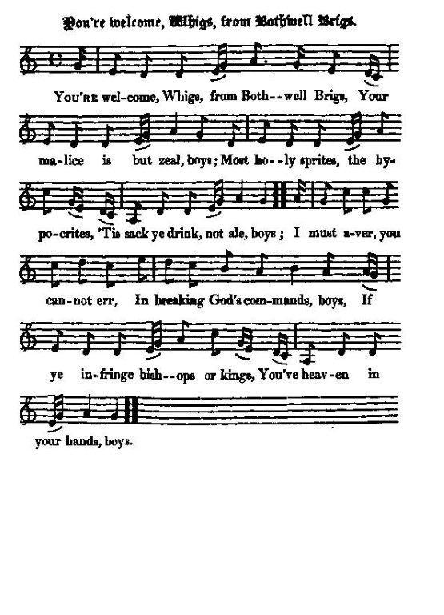
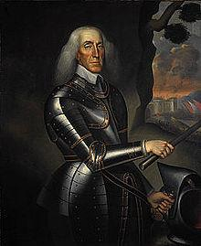
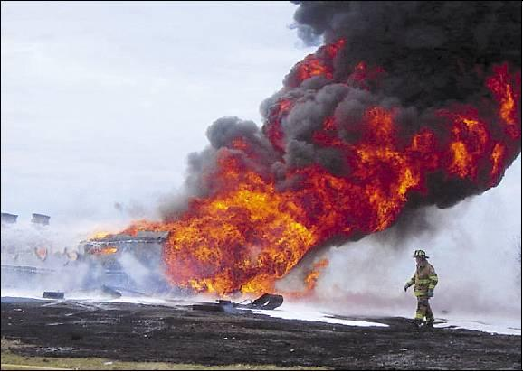

Bothwell Brigs
Three songs to the same tune
1° You're welcome, Whigs from Bothwell Brigs
1° Bienvenue, Whigs de Bothwell Brigs
Composed c. 1688, Unknown Author *** Composé vers 1688, auteur inconnu
Tune - Mélodie MIDI ***MP3"Whurry Whigs awa!"
Throughout pentatonic but for two flattened notes in the verse ("In breaking GOD'S comMANDS, boys")
Entièrement pentatonique sauf deux notes abaissées d'un demi-ton au couplet ("D"entorse au DEcaLOgue")
From Hogg's "Jacobite Reliques", vol. I, N° 10, 1819
Sequenced by Christian Souchon

|
To the tune This strange pentatonic Scottish air is said (by Andrew Kuntz in his "Fiddler's Companion", not by Hogg) to have been played by a Highland piper in Montroses's army during its defeat at Philiphaugh, in September 1645, to rally his companions. He played until a bullet cut him down. He fell mortally wounded into the river and ever after the spot has been known as "Piper's Pool". The tune is known as "Whurry, Whigs away" which is the burden of the second song addressed on this page. The characteristic duple time rhythm (2/4) with elaborate shifting tempos of the tune: °_, °_, °°_,°_ °°_, °_, °°_, _ °°_, °_, °°_, °_° °°_, °_,°°_, _ requires that every second line should end with two stressed syllables. That's the reason for the expletive monosyllable (man!, boy!, O!, Sir!...) prolonging the sentence. This device was often resorted to ever after, e.g. in The battle of Killiecrankie, Killiecrankie, The battle of Sherramoor, Dialogue between Argyll and Mar, etc. (When translating such texts into French, using feminine rhymes will do very nicely!) Furthermore, in the first song, the lyrics feature internal rhymes in every second line that are not always easy to convey in translation! Though the same title is sometimes used for it ("Whurry, Whigs, awa!") the present tune is different from the air introducing this collection, "Awa, Whigs, awa". Increasing the confusion, the above story of a brave Highland piper playing the latter tune until he died, is also recounted (by Hogg, for instance) in connection with Claverhouse and the battle of Bothwell Bridge! Source "The Fiddler's Companion" (cf. Links) and "Jacobite Minstrelsy" page 134, (1828). This tune is very similar to Clout the Cauldron discussed below. |
A propos de la mélodie Cette étrange mélopée écossaise pentatonique retentit, dit-on, (c'est Andrew Kuntz, dans son "Fiddler's Companion" et non Hogg qui l'affirme), à la bataille de Philiphaugh en septembre 1645 qui vit la défaite de Montrose. Le sonneur la joua pour rassembler ses compagnons jusqu'à ce qu'une balle mortelle le fasse taire. Cette mélodie est connue sous le titre de "Whurry, Whigs away", qui est le refrain du chant N°2 Ci-après. Le rythme binaire (2/4) et les savantes alternances qui caractérisent cette mélodie: °_, °_, °°_,°_ °°_, °_, °°_, _ °°_, °_, °°_, °_° °°_, °_,°°_, _ amènent à terminer 1 ligne sur 2, par 2 syllabes accentuées qui se suivent. C'est ce qui explique le recours à des monosyllabes explétives dans l'original anglais (man!, boy!, O!, Sir!...) pour terminer la phrase. Ce procédé a été souvent repris: par exemple , dans La bataille de Killiecrankie, Killiecrankie, La bataille de Sherrifmuir, Dialogue entre Argyll et Mar, etc. (En traduction française, on peut leur substituer des rimes féminines, sans altérer le sens!) Autre fait remarquable: dans le 1er chant, les paroles présentent, un vers sur deux, des rimes internes qu'il n'est pas toujours facile de conserver dans la traduction! Bien que le même titre lui soit parfois donné ("Whirry, Whigs awa!"), la présente mélodie est différente de celle qui accompagne le chant sur lequel s'ouvre ce recueil, "Awa, Whigs, awa". Pour tout embrouiller, on raconte aussi à propos de ce second chant, comme le fait Hogg, par exemple, l'histoire du sonneur héroïque, en la rapportant à Claverhouse et à la bataille de Bothwell Bridge! Source "The Fiddler's Companion" (cf. liens). Cette mélodie est à rapprocher de Rétame le chaudron examiné plus loin. |

|
YOU'RE WELCOME, WHIGS, FROM BOTHWELL BRIGS 1. You're welcome, Whigs, from Bothwell Brigs, [1] Your malice is but zeal, boys ; Most holy sprites, the hypocrites, 'Tis sack [1 bis] ye drink, not ale, boys; (twice) I must aver, ye cannot err, In breaking God's commands, boys ; If ye infringe bishops or kings, You've heaven in your hands, boys. (twice) 2. Suppose ye cheat, disturb the state, And steep the land with blood, boys; If secretly your treachery Be acted, it is good, boys. The fiend himsel', in midst of hell, The pope, with his intrigues, boys, You'll equalize in forgeries; Fair fa' you, pious Whigs, boys. 3. You'll God beseech, in homely speech, To his coat-tail you'll claim, boys; Seek lippies of grace frae his gawcie face, And bless and not blaspheme, boys. Your teachers they can kiss and pray, In zealous ladies' closets; Your wits convert by Venus' art; Your Kirk has holy rosette. 4. Which death will tie promiscuously, Her members on avail, boys, For horned beasts the truth attest, That live in Annandale, boys. But if one drink; or shrewdly think A bishop ere was saved, No charity from presbytery, For that need once be craved. 5. You lie, you lust, you break your trust, And act all kinds of evil, Your covenant makes you a saint, Although you live a devil. From murders, too, as soldiers true, You are advanced well, boys; You fought like devils, your only rivals, When you were at Dunkeld, boys. [2] 6. Your wondrous things great slaughter brings, You kill'd more than you saw, boys; At Pentland hills [3] ye got your fills, And now you seem to craw, boys. Let Websters preach, and laddies teach The art of cuckoldry, boys, When cruel zeal comes in their tail, Then welcome presbytery, boys. 7. King William's hands, with lovely bands, You're decking with good speed, boys; If you get leave, you'll reach his sleeve, And then have at his head, boys. You're welcome, Jack, we'll join a plack, To drink your last confusion, That grace and truth we may possess Once more without delusion. [4] Source: Jacobite Minstrelsy, published in Glasgow by R. Griffin & Cie and Robert Malcolm, printer in 1828. |
BIENVENUE AUX WHIGS A LEUR RETOUR DE BOTHWELL BRIDGE 1. Salut, Whigs de Bothwell Brigs [1] Salut, vous qui faites le mal par zèle! Préférant, saints pharisiens, Boire du vin blanc sec [1 bis], plutôt que de l'ale. (bis) On ne fait pas, c'est vrai, ma foi, D'entorse au décalogue, En bravant évêques et rois, Et ici-bas votre vie n'est qu'un prologue. (bis) 2. Quand vous trichez, complotez, Et que par votre faute le sang coule, Si tout est fait en secret Vous n'aurez jamais rien à craindre des foules. Satan lui-même, en la géhenne, Le Pape, aiment l'intrigue. Egalez donc leurs stratagèmes! Nous vous souhaitons bonne chance, pieux Whigues! 3. Priez Dieu, larmes aux yeux, Accrochez-vous donc sans cesse à Ses basques! Il saura prendre pitié. Si vous mettez un peu d'onction dans vos frasques! Vos maîtres excellent dans l'art De hanter les alcôves. Que vos esprits en soient emplis, Comme votre Eglise et vos temples, de roses! 4. La mort en orne comme De cornes les fronts de tous vos fidèles. Il n'est que de voir tous ces Bufs dont regorgent les prairies d'Annandale. Mais si l'on boit, ou si l'on croit Au salut par l'évêque, Aucun espoir: le consistoire Rejette impitoyablement les requêtes. 5. Mentir, forniquer, trahir, Faire toute sorte de mal, qu'importe! Le covenant fait des saints Des émules du diable et de sa cohorte. Assassin ja-dis te voilà Soldat - splendide avance!- Dont prit Satan, ton concurrent, A la bataille de Dunkeld [2] la défense. 6. Ils entraînent, vos hauts faits, De sanglantes tueries et des carnages. Pentland Hills [3] fut l'apogée. Vous avez l'air de coqs chantant en leurs cages! Websters égrène, et tous enseignent, L'art du plaisant ramage. Vos égaux vous diront "bravo!" Si la rage monte dans votre plumage! 7. Roi Guillaume, tes mains soient De jolis rubans vite recouvertes! S'il te plait, le bras entier. Ils s'occuperont ensuite de ta tête. Salut Jeannot, c'est mon écot Pour boire à ta défaite. Que l'honneur et la vérité En ce pays à nouveau règnent en maîtres! [4] (Trad. Christian Souchon(c)2009) |
|
This is another instance of Scottish Pasquil. Hogg notes in his "Relics": "It has been well remarked, that in proportion to the desperate state of their master's affairs, the songs of the Jacobites used to become angry, bitter, and outrageous ; this song affords evidence of the fact. It was written obviously just after the Revolution in 1688, and is accordingly full of gall and ill humour. It is, perhaps, one of the best specimens that remains of that spleen and intemperance of the enemies of the Whigs." |
Voici un autre exemple de "Pasquil" écossais. Hogg note dans ses "Reliques": "On a dit, à juste titre, qu'au fur et à mesure qu'empiraient les affaires de leurs maîtres, les chants des Jacobites devenaient plus hargneux, acerbes et outrageants. Le présent morceau en fournit la preuve. Il est clair qu'il fut composé après la révolution de 1688 et il est, en conséquence, rempli de fiel et de sarcasmes. C'est sans doute le meilleur témoin qui ait survécu de la rancune et de l'intolérance qui animaient les ennemis des Whigs. |
|
[1] The Battle of Bothwell Bridge (22nd June 1679) "One of the darkest episodes in the Covenanting wars was the aftermath of the battle of Bothwell Brig in 1679. The army that crushed them was led by Charles II's illegitimate son James the Duke of Monmouth and Buccleuch. Unusually for the time, he didn't order a wholesale massacre of the prisoners afterwards. Instead 1200 of them - many of them poor country folk rounded up from West Lothian, who had taken no part in the battle - were marched to Edinburgh, where Greyfriars Churchyard was turned into a makeshift concentration camp for them. They were kept there in the open through the winter; many died. 257 stood trial and were sentenced to be sold as slaves in the West Indies. Their ship was wrecked in the Orkneys. The captain refused to open the hatches, and only 48 survived." Quoted from Jack Campin's site "Embro" [1 bis] sack; play on words: both "plunder" and "white wine". [2] Dunkeld was mostly destroyed during the battle of Dunkeld , when in August 1689, the Cameronian Regiment successfully fought the Jacobites shortly after Killiecrankie. [3] The Pentland Hills were the scene of an incident in 1666 following the Restoration of King Charles II, when a small force of badly armed Covenanters were defeated. [4] See also "Awa, Whigs, awa". |
[1] La bataille de Bothwell Bridge (22 juin 1679) "L'un des épisodes les plus sombres des guerres des Covenants fut celui qui suivit la bataille de Bothwell Bridge en 1679. L'armée qui écrasa les Covenantaires était conduite par le fils naturel de Charles II, le Duc de Monmouth et de Buccleuch. Contrairement aux usages de l'époque, il n'ordonna pas le massacre des prisonniers. Mais 1200 d'entre eux, -pour la plupart de pauvres paysans rameutés depuis le West Lothian et qui n'avaient pas pris part à la bataille -, furent conduits à Edimbourg et parqués dans le cimetière des Franciscains, converti en "camp de concentration" de fortune. Ils y restèrent tout l'hiver et beaucoup y moururent. 257 d'entre eux furent jugés et condamnés à être vendus comme esclaves aux Antilles. Le bateau fit naufrage au large des Orcades. Le capitaine refusa d'ouvrir les écoutilles et 48 seulement de ces naufragés survécurent." Citation tirée du site de Jack Campin: "Embro" (Edimbourg) [1 bis] Sack: jeu de mots (intraduisible). Le mot signifie, à la fois, "vin blanc sec" et "sac" (mise à sac). [2] Dunkeld fut presque entièrement détruite pendant la bataille du même nom, lorsqu'en août 1689, le Régiment Caméronien l'emporta sur les Jacobites, peu après Killiecrankie. [3] Les Pentland Hills furent les témoins d'un incident survenu en 1666, après la restauration de Charles II, à savoir la défaite d'une petite bande de Covenantaires mal armés. [4] Cf. aussi "Awa, Whigs, awa". |
2° Whurry Whigs awa'!
2° Déguerpissez, les Whigs!
From Hogg's "Jacobite Relics", volume 2, song N°32, page 63, 1821
To the same tune - sur le même timbre|
To the Lyrics "Whurry, Whigs awa'!" is a sort of historical recapitulation of the political "sins" of the Whigs, from Montrose's wars against the Covenanters to the accession of George I (1714), obviously composed at different periods and by different hands. For instance, part of it is ascribed to George Halket, who allegedly composed Logie of Buchan. |
 Thomas Dalyell (1599 - 1685) |
Concernant le texte "Déguerpissez, les Whigs!" est une sorte de résumé historique des "fautes" politiques commises par les Whigs (selon les Jacobites), depuis les guerres de Montrose contre les Covenantaires jusqu'à l'accession au trône de Georges I (1714). A l'évidence, il fut composé par plusieurs personnes à des époques différentes. C'est ainsi qu'il est attribué en partie à George Halket, auteur putatif de Logie of Buchan. |
|
WHURRY, WHIGS, AWA! 1. Where are the days that we have seen When Phoebus shone so bright, man? How blythe and merry we hae been When ev'ry ane gat right, man! (bis) But gloomy clouds do overshade And spread wide overa', man! Ill-boding comets blaze o'erhead. O Whurry Whigs awa, man! (bis) 2. Now ill appears wi' face fu' bare, In high and low degree, man, And wild confusion every where, Which every ane may see, man. The blind are chosen for our guides ; I fear we'll get a fa', man, There's nane need wonder though we slide. O whurry Whig awa, man! 3. Of primitive simplicity Some in our church was left, man; But now of truth and verity, Alas, we are bereft, man ! Rebellion's horns do loudly tout, Wi' whining tone, and blaw, man; Yet deeds o' grace they leave without. O whurry Whigs awa, man! 4. New upstarts only now succeed, Our nation's misery, man; We're bound in slavery heel to head, Yet deav'd wi' liberty, man. But when did e'er the Whigs prevail 'Gainst liberty and law, man ? At a' but treachery they fail. O whurry Whigs awa, man! 5. Montrose convened the gallant Graham, [1] The loyal clans arose, man, To fight the Covenanter lambs, Wha did the right oppose, man. At Aldearn, Alford, and Kilsythe, [2] Their bouks got mony a claw, man : The loyal hearts like sheep did drive The whurry Whigs awa, then. 6. King Charlie being foully slain, For which thank Whiggery, man, Then Cromwell in his place did reign, The Whigs anointed he, man. That mushrom monarch Presbyt'ry Established by law, man, And overturn'd old Prelacy. O whurry Whigs awa, man ! 7. King Charles the Second did resort Unto our loving isles, man ; His father's head took frae the port, And set up gley'd Argyle's, man, [3] Abolish'd was the Covenant, He lik'd not it ava, man, But rear'd true kingly government. O whurry Whigs awa, man ! 8. The restless Whigs, with their intrigues, Themselves they did convene, man, At Pentland Hills and Bothwell Brigs, [4] To fight against the king, man; Till brave Dalyell came forth himsel, [5] With loyal troops in raws, man, To try a match with powther and ball: Then saints turn'd windlestraws, man. 9. The brave Dalyell stood i' the field, And fought for king and crown, man; Made rebel Whigs perforce to yield, And dang the traitors down, man. Then some ran here, and some ran there, And some in field did fa', man, And some to hang he didna spare, Condemned by their ain law, man. 10. Yet that would not the carles please. Did you not hear the news, man, How, at Drumclog, behind the bog, [6] They ga'e the deil his dues, man ? With blessed word and rusty sword They wrought a wondrous feat, man; For ten to ane they wan the day, And wow but they were great, man ! 11. But, wae's my heart! it was nae sport, Though they were set on ill, man, To see them fa' like silly sheep, That day on Bothwell Hill, man. The royal Duke his men forsook, And o'er the field did ride, man, And cried aloud to spare their blude, Whatever might betide, man. 12. But Colonel Graham of noble fame, Had sworn to have his will, man, No man to spare in armour there, While man and horse could kill, man. O then the Whigs from Bothwell Brigs Were led like dogs to die, man : In Heaven's might they couldna fight, But rais'd a horrid cry, man. 13. By hill and dale they gart them skale, It's there to bide a blink, man, Till in sic case, to their disgrace, They rais'd a dolefu' stink, man. Their necks were cropt but fear or doubt, Their malice prov'd their fa', man, While every honest heart cried out, " O whurry Whigs awa, man!" 14. Next we gat owre an Orange king, That play'd wi' parties baith, man; A hogan-mogan foreign thing, That wrought a world o' skaith, man. When he came owre our rights to see, His father, friend, and a', man, By his Dutch guards he drove to sea, Then swore he ran awa, man. 15. The fifth day of November he Did land upon our coast, man; But those who lived his reign to see, Of it they did not boast, man. Seven years of famine did prevail, The people hopeless grew, man: But dearth and death did us assail, And thousands overthrew, man. 16. But Willie's latter end did come; He broke his collar-bone, man. We chose another, dainty Anne, And set her on the throne, man. O then we had baith meal and malt, And plenty over a', man; We had nae scant o' sin nor saint, O whurry Whigs awa, man! 17. We then sought out a German thing Call'd George, and brought him here, man; And for this beggar cuckold king Sore taxes we maun bear, man. Our blood is shed without remead, Our rights are scorn'd at a', man ; For beggars boast and rule the roast. O whurry Whigs awa, man. 18. Our fathers griev'd are with this yoke, The time it's drawing near, man, That vengeance breeds for tyrants' heads, The land no more can bear, man. May God preserve our rightfu' king From traitors' cursed claw, man; Or lang we may have cause to sing " O whurry Whigs awa, man !" |
DEGUERPISSEZ, LES WHIGS! 1. Jadis, personne ne doutait Que Phébus resplendisse. Que de bonheur et de gaieté, Lorsque dans ce pays régnait la justice! (bis) Des nuées ont obscurci Le firmament où des étoiles luisent Qui sont signes de soucis. Déguerpissez! Mais qu'attendez-vous les Whigues? (bis) 2. Quand c'est à visage décou- Vert que le mal s'affiche, Tout n'est que confusion partout, Et chacun voit que partout règne le vice. On choisit pour nous guider Des aveugles, j'ai peur qu'on ne trébuche A quoi bon s'en étonner Déguerpissez, les Whigues, avant la chute! 3. Notre église gardait un peu De sa prime innocence Mais hélas, on nous a volé Sa vérité, comment lui faire confiance? Les cors de la rébellion Font sonner bien fort leurs notes plaintives. Mais plus question d'actions De grâce. Partez, allez-vous-en, les Whigues! 4. Aux seuls parvenus le succès, Au peuple la misère: Enchaînés de la tête aux pieds, De liberté l'on nous rebat les oreilles. Mais vit-on les Whigs jamais Prévaloir contre notre libre arbitre, Bien que fraudeurs patentés? Partez-donc, les Whigs, vous n'êtes que des pitres! 5. Quand Montrose convoque Graham [1] Les clans loyaux se lèvent Contre les gens du Covenant Qui ne respectent ni le droit ni les trêves. A Kilsyth, Aldearn, Alford, [2] Tous, ils se sont faits rosser d'importance. Les coeurs loyaux sans effort Ont dispersé toute cette ovine engeance. 6. Ayant par traitrise immolé Le roi Charles, les Whigues Ont vite appelé pour régner A sa place Cromwell à force d'intrigues. Ce succédané de roi Institua des lois pour nommer les prêtres Au lieu des anciens prélats. Oh, déguerpissez les Whigs tant que vous êtes! 7. Lorsque Charles II, ce héros, Retourna sur nos îles, A fait place sur le billot La tête de son père à celle d'Argyle. [3] Le Covenant fut par lui Aboli, car il ne lui plaisait guère; Un vrai règne rétabli. Déguerpissez, les Whigs, dont on n'a que faire! 8. Ils ont l'intrigue au corps, ces Whigs: De nouvelles alarmes! A Pentland Hills, à Bothwell Brigs [4] Contre le roi, voilà qu'ils prennent les armes! Quand vint le brave Dalyell [5] Avec ses rangées de troupes loyales. Saints Whigs, à vous le sisal Une fois qu'ont parlé la poudre et les balles. 9. Lorsque Dalyell au champ d'honneur Pour le roi, la couronne, Part en guerre, les Whigs prennent peur: Ces traîtres ne sont qu'une race poltronne. Par ci tout comme par là Ils s'enfuient au loin, et les autres tombent. A d'autres la corde échoit Selon leur propre loi cela leur incombe! 10. Mais nos gens étaient irrités: Aux dernières nouvelles, A Drumclog, au bord des marais, [6] Le diable a vu se remplir son escarcelle. Sabres rouillés et prêcheurs, Participèrent à l'apothéose. A dix contre un nos bretteurs Les ont vaincus. Ce fut un succès grandiose! 11. J'ai le cur gros! C'était trop beau: Cette maligne engeance Qui tombait comme des agneaux Stupides à Bothwell Hill, ah, quand j'y pense! Le Duc de Monmouth quitta Ses gens, puis a chevauché par la plaine, Criant qu'on les épargnât, Qu'on ne verse pas leur sang, quoi qu'il advienne. 12. Graham dont on sait le renom Avait fait la promesse Qu'infanterie, cavalerie N'épargneraient nulle armure s'il en reste. Mais les Whigs de Bothwell Brigs Furent emmenés, la mourante meute. Le Ciel avait interdit Qu'ils combattent. Ils crient. Ah, l'horrible émeute! 13. Par vaux, par monts, allons, marchons! Un instant on s'arrête. Mais à présent, mal leur en prend. Ne voila-t-il pas qu'ils hurlent à tue-tête? Sans hésiter on les pend: Leur malice est la cause de leur chute, Tandis que les braves gens S'écrient "Videz les lieux, Whigs, où que vous fûtes!" 14. En misant sur les deux tableaux Orange a pris le trône. Un Batave, nous voilà beaux, Qui fit des dégâts comme avant lui personne. Au nom de nos droits, dit-il, Les Hollandais contraignent son beau-père Et ses amis à l'exil. Puis il jure qu'il ne s'attardera guère. 15. Le cinq novembre il aborda Fièrement sur nos côtes. Ceux qui vécurent sous ce roi Ne se vantèrent point d'avoir un tel hôte. Famine sept ans durant. Dans le peuple croît la désespérance. C'est pour des milliers de gens La disette et la mort et la déchéance. 16. Mais Guillaume mourut enfin En se brisant la nuque. La gentille Anne vint à point Siéger sur le trône et remplacer l'eunuque. Bientôt farine et houblon Abondent ainsi que d'autres épices: Péchés et saints à foison. O Whigs, il est grand temps que l'on déguerpisse! 17. On appelle alors un Teuton. Ah, comme il se rengorge! Bientôt ce famélique oison Augmente les impôts. Vive le roi Georges! Sans remède nos droits sont Méprisés, tandis que notre sang coule. Ce sont des mendiants qui font Tourner la broche. "Whigs, Whigs, partez en foules!" 18. Nos pères souffrent sous le joug. Bientôt le temps s'avance Où les tyrans tendront le cou Au peuple excédé pour subir sa vengeance. Dieu garde notre vrai roi Des traîtres et de leurs griffes maudites Alors mon chant ne sera Plus "Déguerpissez, Whigs, déguerpissez vite!" (Trad. Christian Souchon (c) 2010) |
|
[1] Montrose, Graham: James Graham, Marquis of Montrose (1612 - 1650) and John Graham of Claverhouse (1648 - 1689). [2] Aldearn, Alford, Kilsyth: Victorious battles fought by James Graham, Marquis of Montrose (1612 - 1650) against the Covenanters in 1645, before he was routed by David Leslie at Philiphaugh. [3] Argyle see Airlie, note 3. [4] For explanations on Bothwell Brig and other battles see notes to previous song. [5] Tam (Thomas) Dalyell of the Binns (1599 - 1685) was a Scottish general who had accompanied Charles I's expedition to La Rochelle in 1628 and served under General Leslie. After the King's execution, he was captured at Worcester (1651), escaped to Russia where he entered the service of the Tsar. He returned upon the Restoration of Charles II and was engaged as commander-in-chief in Scotland against the Covenanters, in the Pentland Hills (1666) where his cruelty earned him the nickname "Bluidy Tam". He then was made a privy councillor, but replaced as commander-in-chief by Monmouth in 1679 and he did not appear at the battle of Bothwell Brig till after the close of the engagement. [6] Drumclog a battle fought on 1st June 1679 between a party of Covenanters commanded by Robert Hamilton and Graham of Claverhouse who was defeated. |
[1] Montrose, Graham: James Graham, Marquis de Montrose (1612 - 1650) et John Graham de Claverhouse (1648 - 1689). [2] Aldearn, Alford, Kilsyth: Victoires remportées par James Graham, Marquis de Montrose (1612 - 1650) sur les Covenantaires en 1645, avant d'être lui-même mis en déroute par David Leslie à Philiphaugh. [3] Argyll: cf. Airlie, note 3. [4] Des explications sur Bothwell Brig et autres batailles sont données dans les notes annexées au chant précédent. [5] Tam (Thomas) Dalyell of the Binns (1599 - 1685) était un général écossais qui participa à l'expédition de Charles I contre La Rochelle en 1628 et servit sous les ordres du Général Leslie. Après l'exécution du roi, il fut capturé à Worcester (1651), s'évada et se rendit en Russie où il entra au service du Tsar. Il rentra lors de la restauration de Charles II et fut nommé commandant en chef en Ecosse et prit part à la lutte contre les Covenantaires aux Pentland Hills (1666), où sa cruauté lui valut le surnom de "Tam le Sanglant". Il fut ensuite nommé Conseillé privé, mais remplacé au poste de Commandant-en-chef par Monmouth en 1679 et refusa de paraître à la bataille de Bothwel Brig avant la fin de l'engagement. [6] Drumclog: bataille livrée le 1 juin 1679 par les Covenantaires commandés par Robert Hamilton à Graham de Claverhouse qui fut vaincu. |
3° The Turnimspike
3° La route à péage
From Hogg's "Jacobite Relics", volume 2, song N°57 to the same tune
Tune - Mélodie: MIDI***MP3"Clout the Cauldron - Battre le chaudron", sequenced by Ron Clarke (see links)
|
To the Tune From a MS. originally called the Guthrie MS. Guthrie was a minister beheaded in 1661 for writing a seditious pamphlet. The tune is one of the oldest Scottish dance tunes ever found. Source for the above version: Stanford/Petrie (Complete Collection), 1905; No. 403, pg. 102. A variant printed in McGibbon "Scots Tunes, book II", c. 1746; pg. 45 is practically identical with "Whurry, Whigs awa!" above. Source "The Fiddler's Companion" (cf. Links) and "Jacobite Minstrelsy" page 134, (1828). Curiously, Glen (1900) refutes Stenhouse's (1853) claims that the melody is ancient, stating that he cannot find evidence of its being published in any form, printed or manuscript, before 1733. Stenhouse's anecdote is more interesting to the lay reader however, he recounts how Bishop Chisholm of Dunblane used to say of 'Clout the Cauldron'; 'if he were going to be hanged, nothing would sooth him so much as to hear this tune played by the way'. Source : "The Scots Musical Museum", volume I, page 24, song 023, "the Turnimspike" There is a third tune, also titled "Clout the caldron", but clearly different from the foregoing. See A song to the tune 'Clout the Caldron'. |
Concernant la mélodie Tiré d'un manuscrit appelé le manuscrit Guthrie. Guthrie était un pasteur qui fut décapité en 1661 pour avoir publié des écrits séditieux. La mélodie est l'un des plus anciens airs de danse écossais connus. La source de la version ci-dessus est Stanford/Petrie (Complete Collection), 1905; N°403, page 102. Une variante, tirée du recueil de McGibbon, "Airs écossais, volume II", env. 1746, page 45 est pratiquement identique à "Whurry, Whigs awa!" ci-dessus. Source "The Fiddler's Companion" (cf. Links) and "Jacobite Minstrelsy" page 134, (1828). Curieusement, Glen (1900) réfute l'affirmation de Stenhouse (1853) que cette mélodie est ancienne, au motif qu'on ne trouve pas de trace de sa publication manuscrite ou imprimée, avant 1733. Une anecdote citée par Stenhouse est susceptible d'amuser le lecteur: l'évêque Chisholm de Dunblane aimait à dire à propos de "Battre le chaudron": "si l'on devait me pendre, rien ne me plairait tant que d'entendre cette mélodie jouée sur mon chemin". Source : "The Scots Musical Museum", volume I, page 24, song 023, "the Turnimspike" Il existe une troisième mélodie, également intitulée "Battre le chaudron", mais bien distincte des précédentes. Cf. Chant sur l'air de 'Battre le chaudron' |
|
To the lyrics The author of this outtburst of indignation over the custom duties and turnpikes is Dougal Graham, poet and bellman in Glasgow (1724 - 1779). Sir Walter Scott said in a letter that "Turnimspike" alone would secure for his author his share of immortality. Turnimspike was first published in Herd's second edition (1776). Source:"Songs from D. Herd's MS" collected by Hans Hecht, 1904. |
Concernant les paroles L'auteur de cette explosion d'indignation contre les octrois et les péages est Dougal Graham, poète et carillonneur à Glasgow (1724 - 1779). Sir Walter Scott écrivait dans une lettre que "Turnimspike" à lui tout seul assurerait à son auteur sa part d'immortalité. Turnimspike fut publié pour la première fois dans la 2ème édition des "Chants" de Herd (1776). Source:"Songs from D. Herd's MS" collected by Hans Hecht, 1904. |
|
TURNIMSPIKE [1] 1. Hersel pe Highland shentleman, Pe auld as Pothwell Prig, man, [2] And mouy alteration seen Amang te Lawland Whig, man. (bis) First when her to te Lawlands came, Hersel was troving cows, man: [3] Tere was nae laws about hims nerse, About te preeks or trews, man. (bis) 2. Hersel did wear te philabeg, Te plaid prickt on her shou'der; Te gude claymore hang pe her pelt, Te pistol sharg'd wi' pouder. But for whereas tese cursed preeks, Wherewith her nerse pe lockit, Ochon! tat e'er she saw te day ! For a' her houghs pe prokit. [4] 3. Every ting in te Highlands now Pe turn't to alteration ; Te sodger dwall at our toor-sheek, And tat's te great vexation. Scotlan' pe turn't a Ninglan' now, And laws pring on te cadger: Hersel wad durk him for her teeds, But, och! she fears te sodger. [5] 4. Anither law came after tat, She never saw te like, man; Tey make a lang road on te crund, And ca' him Turnimspike, man. And wow! she pe a ponny road, Like Louden corn-rigs, man, Where twa carts may gang on her, And no preak ither's legs, man. 5. Tey sharge a penny for ilka horse, In troth, she'll no pe sheaper, For nought but gaen upon te crund, And tey gie me a paper. Tey tak te horse ten pe te head, And tere tey mak him stand, man. She tell tem her hae seen te day Tey hadna sic command, man. 6. Nae doubts, hersel maun traw her purse, And pay tem what hims like, man: I'll see a shugement on his toor, Tat filthy turnimspike, man! Put she'll awa to te Highland hills, Where teil a ane dare turn her, And no come near her turnimspike, Unless it pe to purn her. [6] |
THE TURNPIKE (English transcription) 1. I am a Highland gentleman As old as Bothwell Bridge, man Much alteration I have seen Among the Lowland Whigs, man. (bis) First when I to the Lowlands came, I was there droving cows, man: There was no law about ones arse About the breeches or trousers, man. (bis) 2. I once did wear the philabeg The plaid hooked on my shoulder; The good claymore hung from my belt, The pistol was charg'd with powder. What for, instead, these cursed breeches Wherewith ones arse is locked? Alas! That e'er it saw the day, For both my hocks to be broken! 3. Everything in the Highlands now Is turned to alteration ; The soldier dwells at our door-cheek And thats a great vexation. Scotland is turned to England now And laws bring on the hawker: One would dirk (stab) him for his deeds But, O, one fears the soldier. 4. Another law came after that One never saw the like, man ; They make a long road on the ground And call it turnpike, man. And wow! It is a bonnie road Like London corn-rigs, man, Where two carts may go on it And none breaks the others legs, man. 5. They charge a penny for each horse, Truly 't shall not be cheaper, For naught but going upon the ground, And they give me a paper. They take the horse then by the head, And there they make him stand, man. One tells them "we have seen today"; They had not such command, man. 6. No doubt, one must draw ones purse And pay them what they like, man : Ill see a judgment on its door, That filthy turnpike, man! But Ill away to the Highland hills Where de'il alone dare turn up And doesnt come near a turnpike Unless it be to burn it. |
LA ROUTE A PEAGE [1] 1. Moi, je suis un gentleman Des Highlands. Je date de Bothwell Bridge. [2] J'en ai vu du changement Se produire dans les Lowlands, chez les Whigues! (bis) La première fois que j'y vins, C'était pour l'estivage. [3] Il n'y avait pour mes ... mollets Point de lois réglant des culottes l'usage. (bis) 2. Je portais le philibeg, Avec le plaid épinglé sur l'épaule; A la ceinture l'épée Ainsi que le pistolet chargé de poudre. Concernant ces maudites braies Emprisonnant... les jambes, Hélas, hélas, a-t-on jamais Imaginé de supplice plus étrange? [4] 3. A présent dans les Highlands, Le changement affecte toute chose: Un soldat est en faction Devant chaque porte et cela rend morose. L'Ecosse devient à présent Comme une autre Angleterre. Les lois s'imposent aux marchands. Les poignarder? Gare aux soldats, ménagères! [5] 4. Une autre loi vint alors: On n'en avait jamais vu de semblable! Des routes le long du sol Equipées de ce qu'on nomme des péages. Les belles routes que voilà: Des allées Londoniennes! Deux chars s'y peuvent à la fois Promener, sans que rien de fâcheux n'advienne. 5. C'est un penny par cheval, Le plus bas tarif que l'on vous réclame, Pour circuler sur le sol; Et l'on vous délivre, en sus, une peau d'âne! Prenant le cheval par le frein, Les voilà qui m'arrêtent "Ca fera deux fois aujourd'hui!" "Moi j'applique le règlement. C'est tout bête!" 6. Il va me falloir payer, Tirer de ma bourse l'argent du gage, Je n'ai qu'à lire l'arrê- -Té sur la porte de ce maudit péage! Retournons donc dans les Highlands: Où seul Satan se risque, Lui, les péages il les fuit, Si ce n'est pour incendier ces boutiques! [6] (Trad. Christian Souchon(c)2009) |
|
[1] Turnimspike: "Is an excellent and very popular song ; but is rather one against the modern encroachments on the Highlander's liberty than any dynasty. Hersel thought it, no doubt, a terrible imposition at the turnpike gate, " far nought but gaen upon te crund." Hogg in "Jacobite relics 2nd series" The curious spelling may denote a Gaelic pronunciation (see Turn the Blue Bonnet, 4th verse). [2] "As old as Bothwell Brig": at the time of the battle of Bothwell Bridge (1679) the Tories, not the Whigs, were masters of the situation. Since the song may be dated to 1747 at the earliest the Highland gentleman is 68 at least (see note 4). [3] "Droving cows": see The Clans: Tacksmen. [4] "Cursed breeches": This is one one the many songs lamenting the Ban on Highland Garb from 1747 to 1782. [5] Taxes: see also McLean's Welcome, Note N°2. [6] Lowland turnpike roads: Apparently the strategic roads built in the Highlands by General Wade remained toll free. (see Coir'-a-Ghearraig). |
 "Burning toll booth" |
[1] Tourniquet: "Voici un excellent chant très populaire. Mais il vise les atteintes aux libertés des Highlanders en général, sans s'en prendre à telle ou telle dynastie. On considérait comme exorbitant ce péage qui ne donnait "aucun droit, sinon celui de circuler sur le sol". Hogg in "Jacobite relics 2nd series" La curieuse orthographe du texte Scot imite sans doute la prononciation du gaélique (cf. Turn the Blue Bonnet, 4ème strophe). [2] "Je date de Bothwell Bridge": à l'époque de cette bataille (1679), les Tories, et non les Whigs, étaient maîtres de la situation. Puisque le chant date de 1747 au plus tôt, ce gentleman des Highlands devait avoir 68 ans au moins (cf.note 4). [3] "Estivage": Cf. Les Clans: les "Tacksmen". [4] "Maudites braies": C'est l'un des nombreux chants qui déplorent l'interdiction du kilt entre 1747 et 1782. [5] Taxes: cf. aussi Bienvenue chez McLean's, Note N°2. [6] Routes à péages des Basses Terres: Il semble que les routes stratégiques construites dans les Highlands par le général Wade étaient demeurées gratuites. (cf. Coir'-a-Ghearraig). |